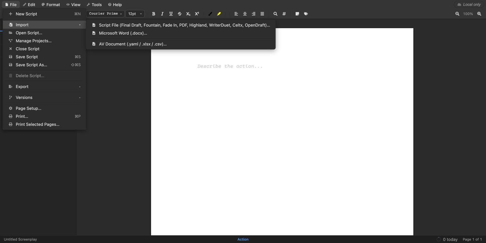
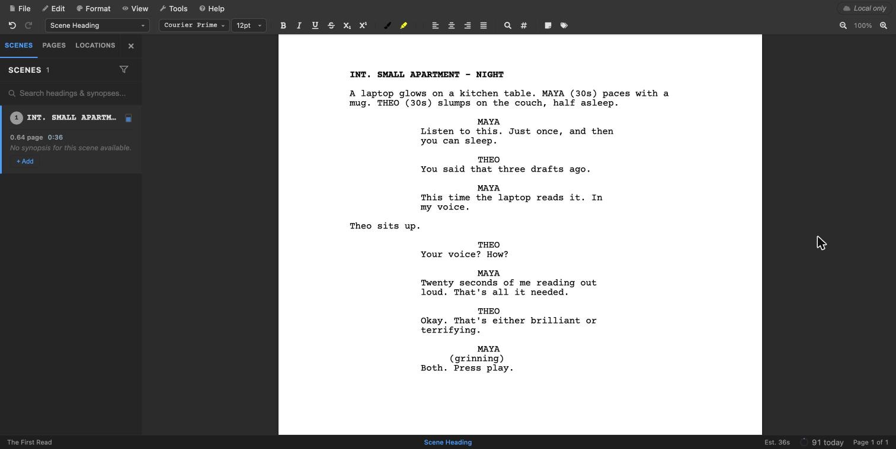
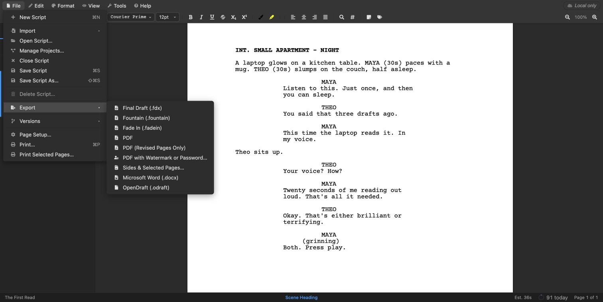
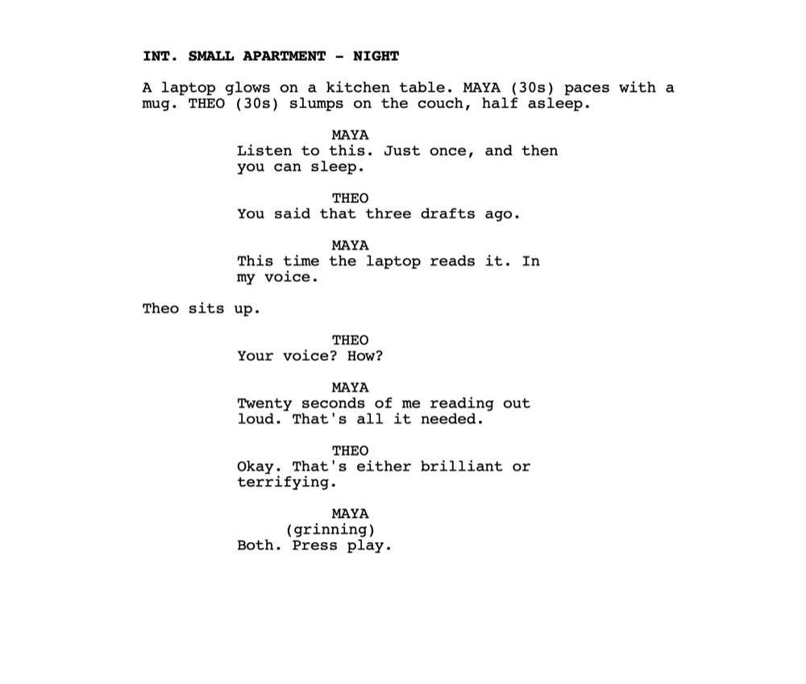

The short answer
- Go to open-draft.com. There’s nothing to install and no sign-up.
- Choose File → Import → Script File and pick your
.fdxfile. - Choose File → Export → PDF or File → Export → Microsoft Word (.docx).
- The converted file lands in your Downloads folder.
That’s it. The rest of this guide shows each step, explains why it’s safe for an unproduced script, and covers what comes through the conversion and what doesn’t.
Is it safe to convert a script online?
Most “free online converters” work by uploading your file to their server, converting it there and sending the result back. For a script under NDA, or one you haven’t registered yet, that’s a real risk: you don’t know who keeps a copy.
OpenDraft works differently. OpenDraft is a free, open-source screenwriting app, and open-draft.com runs the whole app inside your browser. When you import a Final Draft file, your browser reads it and converts it on your own computer. When you export a PDF or Word file, your browser builds that file and saves it straight to your Downloads folder.
We checked this by watching the browser’s network traffic during a conversion. Importing the .fdx and exporting both a PDF and a Word file sent nothing to any server. The only requests were the browser downloading parts of the app itself and a font.
Two things to keep it that way
- Don’t sign in or choose Save Script. The badge in the top-right corner says Local only while you work. Signing in and saving is the one thing that stores a script on the server, and you don’t need it to convert.
- On a shared computer, use a private window. OpenDraft keeps a crash-recovery copy of the open script in the browser’s own storage, on that computer only. A private (incognito) window clears it when you close the window.
Because OpenDraft is open source, anyone can read exactly what the import and export code does.
1Open open-draft.com
Go to open-draft.com on a computer. It opens straight into an empty screenplay. You don’t need an account, a trial or Final Draft itself.
2Import the Final Draft file
Choose File → Import → Script File and select your .fdx file.

The script opens in the editor, formatted as a screenplay, with its scenes listed on the left. Scroll through it to check it came across the way you expect.

3Export to PDF or Word
Choose File → Export, then the format you need:
- PDF for anything you send out: contests, fellowships, producers, actors. It keeps the screenplay layout exactly, page for page.
- Microsoft Word (.docx) when someone needs to edit the text, track changes or add comments.

The file downloads immediately, named after the script: for example, The First Read.pdf or The First Read.docx.

Need a PDF for something sensitive? The same menu has PDF with Watermark or Password…, which stamps every page with CONFIDENTIAL or the reader’s name (one copy per reader, if you list several) and can lock the file with a password, and Sides & Selected Pages… for exporting just the scenes an actor needs.
What comes through the conversion
Everything that prints in a Final Draft script comes through, with its formatting:
- scene headings, action, character names, dialogue, parentheticals, transitions and shots
- the title page, laid out as it was in Final Draft
- dual dialogue, which stays side by side in the PDF
- scene numbers
A few things work differently in Word:
- Page breaks. Word lays out pages itself, so page breaks, (MORE) and (CONT’D) may not land exactly where they do in Final Draft. Use PDF when page count and layout matter.
- Dual dialogue becomes two speeches, one after the other, because Word has no side-by-side dialogue.
- The font. The Word file uses Courier Prime, a free screenplay font. If it isn’t installed on the computer that opens the file, Word substitutes another font. Install Courier Prime from Google Fonts to see it as intended.
Script notes, outline sections and scene synopses don’t print, so they aren’t written into the PDF or Word file. The full list is in the user manual’s format compatibility page.
Other formats work the same way
The same two steps convert other screenwriting formats too. Import opens Final Draft (.fdx), Fade In, Fountain, Highland, WriterDuet, Celtx and PDF. Export writes PDF, Word, Final Draft, Fountain and Fade In.
So you can also go the other way, for example turning a Fountain or Highland script into a Final Draft file for a producer who works in Final Draft.
Questions
Can I open an FDX file without Final Draft?
Yes. An .fdx file is Final Draft’s own format, but OpenDraft reads it. Open it at open-draft.com to read it, edit it, print it or convert it, with no Final Draft licence.
Is it really free?
Yes. OpenDraft is open source under the MIT licence. Converting costs nothing, and there’s no watermark, page limit or account.
Is my script uploaded anywhere?
No, not when you import and export as described here. The conversion runs in your browser on your own computer, and nothing is sent to a server unless you sign in and save the script. See Is it safe to convert a script online? above.
Does it work on a Mac, Windows or Chromebook?
Yes. It runs in a desktop web browser, so the operating system doesn’t matter.
I want to keep working on the script. Now what?
Download the free OpenDraft app for macOS, Windows, Linux, iPad or Android. It opens and saves Final Draft files directly, stores your scripts on your own device, and works offline.